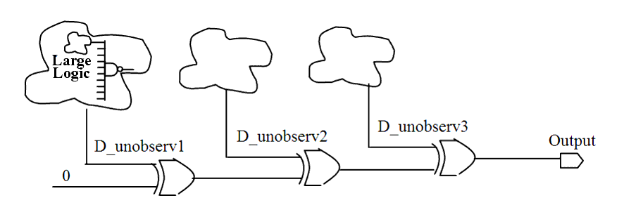

| Description | This is the most commonly used approach to observing a non-observable signal. Non-observable signals in your design decrease test coverage. |
| Policy | DESIGN |
| Ruleset | DFT |
| Language | VHDL/Verilog |
| Type | Hardware |
| Severity | Error |
This is an example of valid Verilog code which uses an XOR tree, followed by a circuit diagram that illustrates the solution:
module ntl_dft32_top; ... wire D_unobserv1,D_unobserv2, D_unobserv3;// unobservable signals ... // large, complex logic to generate some unobservable signals assign Dout = D_unobserv1 ^ D_unobserv2 ^ D_unobserv3 ^ 1'b0; // XOR tree endmodule